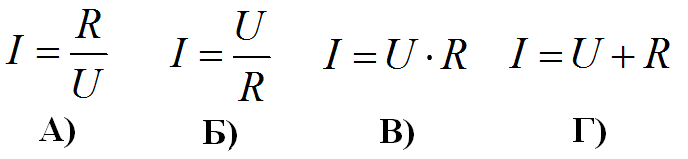

1. В каких единицах измеряется сила тока?
2. В каких единицах измеряется мощность?
3. Какой материал относится к диэлектрикам?
4. Что характеризует напряжение?
5. Какой материал хорошо проводит электрический ток?
6. Какая частота у переменного тока в домашней электросети?
7. Какая мощность выделяется на резисторе при прохождении тока силой 2А, если напряжение на выводах резистора равно 10В?
8. Какая формула позволяет рассчитать силу тока I если известны напряжение U на участке цепи и сопротивление R этого участка?

9. Какое сопротивление имеет резистор, если при прохождении тока силой 2 А напряжение на выводах резистора равно 10 В?
10. Какая величина силы тока считается смертельным для человека?
11. Каким свойством обладают диэлектрики?
12. В каких единицах измеряется частота переменного тока?